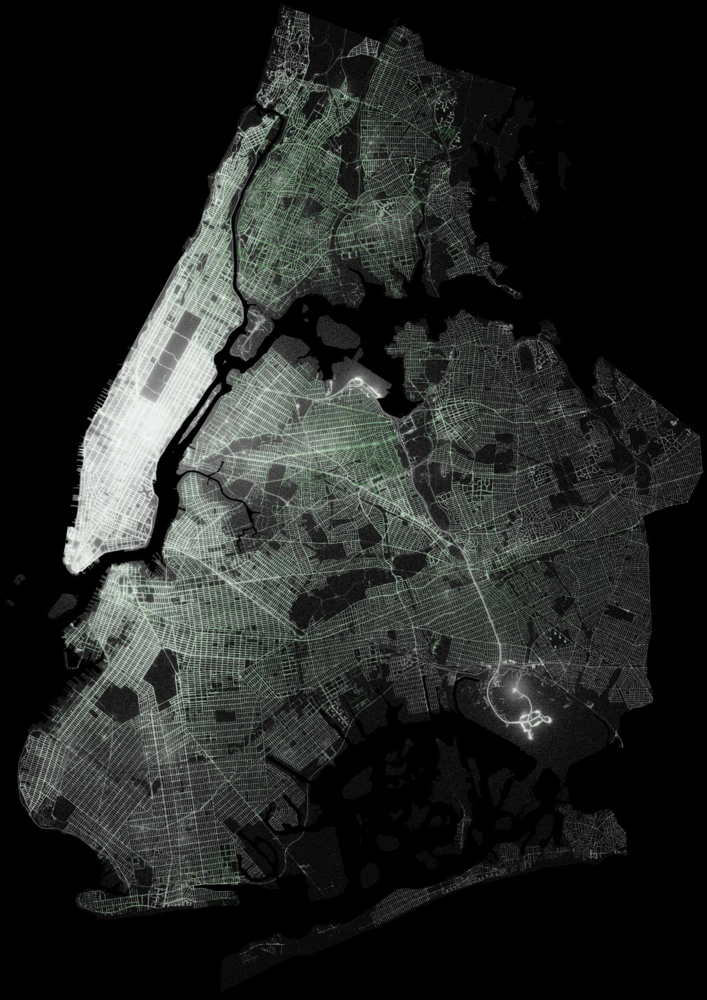
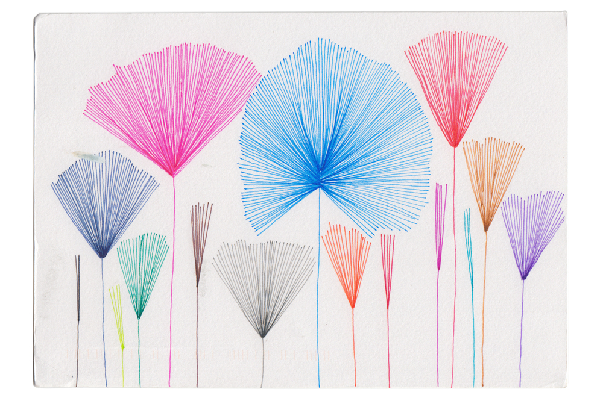
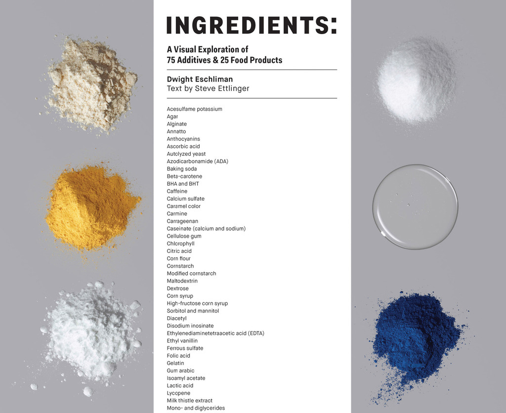
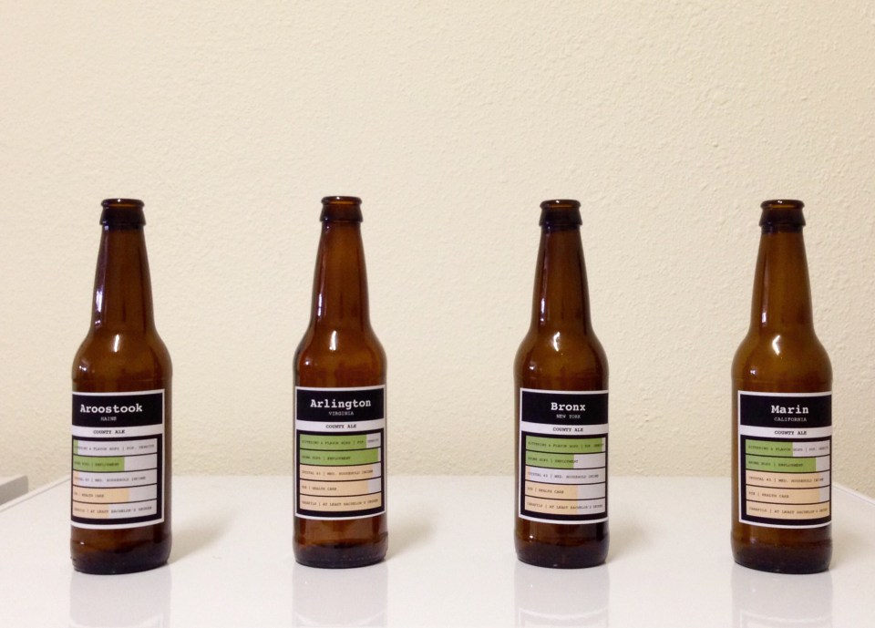
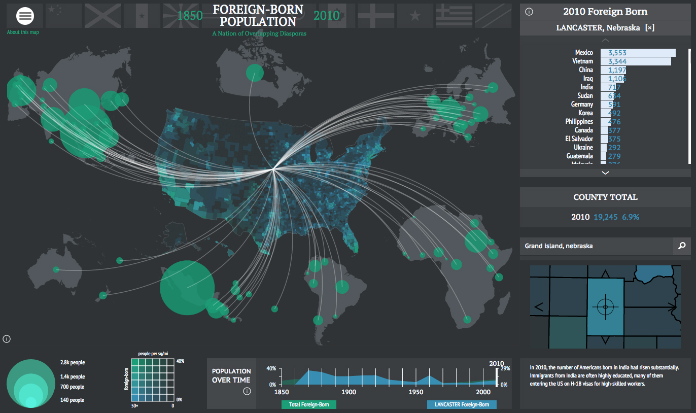
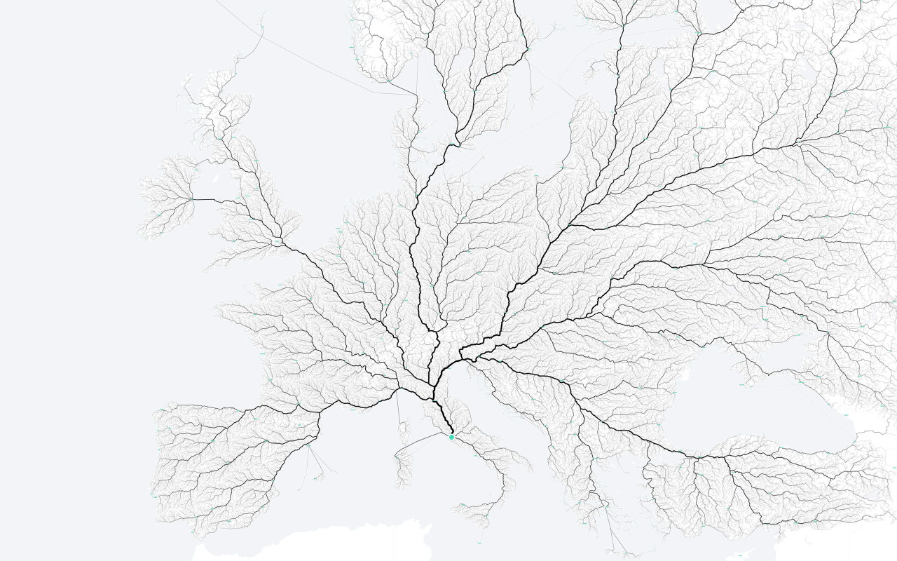
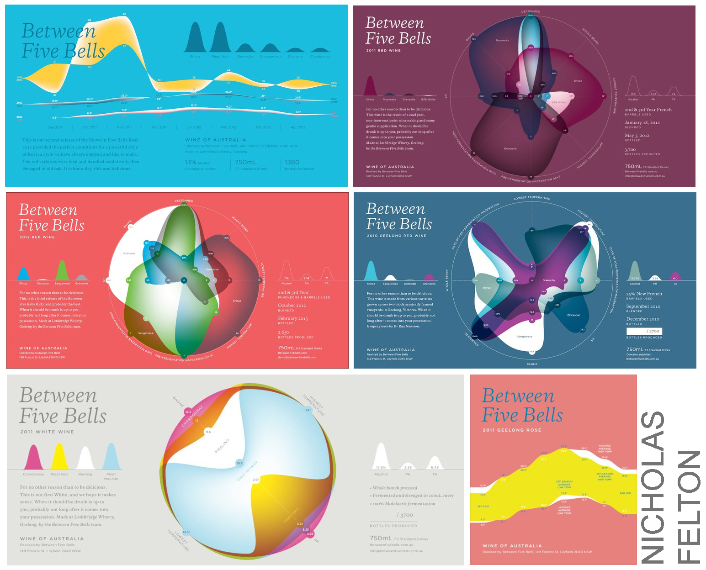

Jenni Sparks is a talented designer who has "hand"-dawn a few city maps. The level of details in the maps is incredible and the reseach involved must have been tremendous.

Todd Schneider has created appealing maps of all New-York taxi drop offs and pickups between 2009-2015.

Giorgia Lupi and Stefanie Posavec have data "hand"-coded their life for a year by sending each other one postcard a week on a different thematic.

A Visual Exploration of 75 Additives & 25 Food Products is an unprecedented visual exploration of what is really inside our food. I link it to another book I have discovered and enjoyed a lot : Le nez du vin

Nathan Yau from Flowing Data experimented brewing its own beer with proportions following variously chosen statistics. Definitely geeky but probably lots of fun.

Digital Scholarship Lab of the University of Richmond has created an interactive atlas of the United States history: American Panorama - definitely worth a look

Moovellab has created those maps displaying all the roads leading to a city. Obviously their first city of choice has been Roma

Designer Nicholas Felton has played with the data from his cousin's vineyard to produce wine labels. It strikes me as a great innovation for wine "connaisseurs" as it could help determining when is the best time to open your wine.


Let's get in touch: